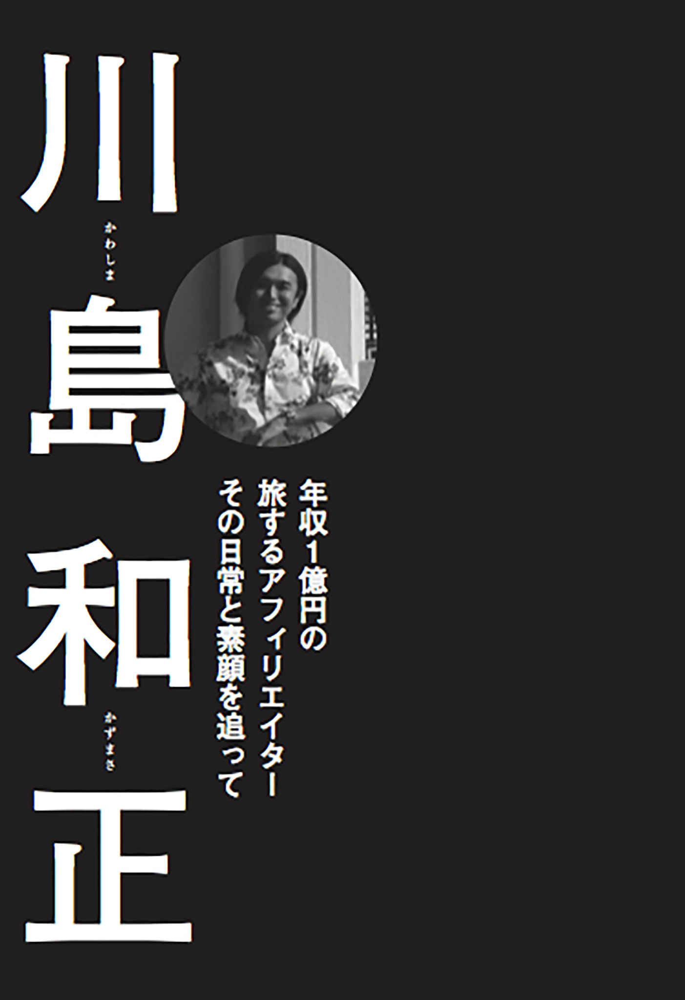
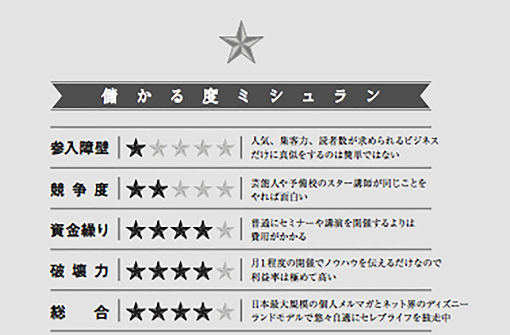

| マネー＆フリー 僕らが楽して大儲けした５７の秘訣（特別公開版） | |
| 水野俊哉 | |
| Cassiopeia Publication (2017) | |
水野俊哉
インターネット起業がブームになっている。といってもビル・ゲイツやスティーブ・ジョブズ、あるいはフェイスフブックの創業者マーク・ザッカーバーグらのような本格的なインターネット事業ではない。ブームになっているのは情報起業家だ。
「誰でもお手軽にできて、簡単に月１００万円くらい儲かるビジネス」である。「リストマーケティングで年収１億円を稼いだ秘密のセミナー」や「５日で３億円を儲けたジョイント起業」なんてのもある。
いわば、現代の錬金術を指南しているのがインターネットの情報起業家たち（以下、ネット起業家と呼ばせてもらう）なのだ。
彼らに共通するのは、オークションやアフィリエイト、情報商材やオンライン塾の販売などインターネットを使った効率の良い新しいビジネスで、平均年収１億円を稼ぎ出していることである。
「年収１億円」。その意味を噛み締めてみてほしい。
これは会社の売り上げを表す「年商」１億円ではない。家賃や人件費など経費を支払った後に残る利益というか、要は個人としての収入、使える金が年間で１億円という意味だ。
月収で約１０００万円である。彼らはサラリーマンの見果てぬ夢でもある年収１０００万円を、たった一ヵ月で、おそろしく効率の良い仕組みで稼ぎ出している。
一体、ネット起業家とはどんな人間なのか------きっと悪いことでもしているに違いない。詐欺かマルチか、そうでなくてもバレないように裏でうまいことやっているんだろう。そんなイメージを抱いている人は多いはずだ。
港区あたりの高層マンションに住んでいて、高級車を乗り回し、夜な夜な芸能人やモデルや女子アナと合コン三昧。ミシュラン掲載のレストランでワインやシャンパンを飲み、寿司だの鉄板焼きだの、ふぐにトリュフに松茸と高級料理を惜しげもなく食いまくる。まるで一時のヒルズ族のような鼻持ちならない奴ら。それが一般的なイメージだと思う。
その実際のところは本書で余すところなく書き記していくが、まず最初に僕が何者で、なおかつこの本で何を書こうとしているのかをお伝えさせていただく。
僕の職業はビジネス書の著者である。著作はこれで18
冊目になるが、ルポルタージュのジャンルははじめてだ。
僕自身もかつては経営者だったという過去をもつ。時は２０００年代の初頭。１９９８年にサイバーエージェント、１９９９年にオン・ザ・エッジが上場し、べンチャーバブルの真っ盛りの頃、僕もＩＰＯ（新規株式公開）を目指して奮闘するべンチャー企業の経営者の一人だった。大学卒業後、一度は就職したものの３年で辞めて独立。すぐに年収は目標の１０００万円を超えた。眠れないほどの忙しい日々の中、スタッフをどんどん増やし、気が付くと２００２年頃には社員10
名程度の零細企業の経営者として充実した日々を過ごしていた。
しかし、２００３年以降、かのホリエモン（堀江貴文）氏やサイバーエージェントの藤田晋氏など同世代の人間がインターネット事業で華々しい脚光を浴びているのに刺激され、わりと画期的なビジネスモデルを引っ提げてべンチャーシーンに参入。
急激に事業を拡大させたところで、売り上げの増加に伴う資金需要の増大で資金調達やトップ営業に忙しくなった。毎月５００万円の返済を続けながら経営の最前線で指揮をとり続けた。
そんな中、お決まりの社内抗争などが起きたり、あのライブドアによって会社が買収されそうになったりした。
そして最終的には、銀行の融資に対する個人保証で３億円もの負債を抱え、会社を追放されてしまったのである。
激務のストレスを言い訳にするわけではないが、当時の僕は夜の六本木や西麻布で札束をばら撒くかのような乱痴気騒ぎを続け、毎晩のようにモデルやレースクィーンたちと合コン三昧。あの海老蔵殴打事件が起きた某リミテッドラウンジも常連だったし、べンチャーシーンに巣食う黒い勢力の鮮やかな錬金術やマネーロンダリング術も垣間見た（言うまでもないが僕自身は無関係である。そんな器用なことができれば、会社を追放されていない）。
そんな状態から、会社を追放され、ビジネス本の著者として再起している。そして数年前、講談社の編集者さんと中華料理店で飲んでいた時のこと。次にやりたい企画はどんなものかという話になった。
その少し前、僕は『幸福の商社、不幸のデパート』（大和書房）の執筆でホテルに缶詰になっていた。だから、次は取材モノがやりたいと考えていた。しかも、どうせ話を聞きにいくならまだ20
代とか30
代はじめで、年収１億円を稼いでいる奴がいい。彼らのビジネスモデルやプライべート、お金についての考え方を聞けるのは、元経営者であり、成功本の研究家であり、なおかつ、彼らと近い位置にいる自分しかいない。そんなことを、酔った高揚感もあって話したのだった。
そして、しばらくして僕も忘れていた頃に「ノンフィクション書籍として企画が通った」という連絡があったのだった。
これまではビジネス書の作家として活動してきたのだが、僕は年間１０００冊以上のビジネス書を読む書斎派で、マスコミの取材や講演依頼すらあまり引き受けない。基本引き込もり人間なのだが、今回は平均年齢30
歳前後の若い起業家たちの取材に飛び回った。彼らに会うために東京ミッドタウンの家賃２３０万円のマンションに日参したり、時には香港まで彼らを追いかけ（海外は趣味のワールドカップ観戦で訪れたドイツ以来だった）、一緒にクルージングしたり、ミシュラン掲載のレストランでのお食事会まで参加した。
なぜ、そこまで彼らの存在に興味を持ったのか？ きっかけは川島和正という一人の男との出会いであり、どっぷりとハマっていった理由は、「ヒルズ族なき後の日本でがっぽり儲けている彼らのビジネスの仕組みが知りたかった」からだ。
そして同じ人間として、彼らが何を食べて何を見て、何を感じて何を考えて生きているのか観察してみたい、という興味も湧いていった。
取材の中で感じたのは「あくどく稼いで遊ぶ」という彼らのパブリックイメージは、ほんの一面でしかないということだ。彼らは一様に勤勉で努力家。「稼ぐ」ことに対する哲学のようなものも持っている。そのビジネス手法は、リアルビジネスの世界にも応用可能だ。
本書はルポであり、ビジネスモデルの解説書である。ただし、ルポといっても戸籍謄本を洗ったり実家をアポなしで突撃取材するなどという探偵のような捜査方法はとっていない。あくまでビジネス書作家の書いたライトなルポ風エッセイととらえてもらってもいい。
また、各パートには、彼らがどのようにして自由とお金を手に入れたのかを僕なりに考察して「成功の秘訣」として抜粋してみた。
誰もが憧れる自由な暮らしを手に入れた彼らの姿から何かを感じてくれれば幸いである。
２０１５年 ３月 水野俊哉
ここ数年、インターネット上の情報ビジネスで年収１億円以上を稼ぎ出す「スーパーアフィリエイター」の台頭が目覚ましい状況となっている。
ライブドアショックが起こるまでマスコミを賑わせていたヒルズ族という言葉も、今ではすっかり聞かなくなった。
代わりにインターネットの世界では、ネット起業家たちが「不労所得」「ネットマーケティング」を合言葉に荒稼ぎをしている。かつてはべンチャー起業家だった僕も、いまやサッカーとビールをこよなく愛する引きこもりビジネス作家である。そんな派手なこととは無縁の僕が、この取材に足を踏み入れることになったきっかけ。それは２００８年２月頃の、ある出会いに遡る。
川島和正------『働かないで年収５１６０万円稼ぐ方法』（三笠書房）という、テリー伊藤氏が帯で推薦文を書いたことでも知られる本がべストセラーになり、〈たった１年で収入を倍にした元「月収24
万円の平社員」〉として一部で話題になっていた男。
２００７年の４月に発売されたこの本で、川島は「楽をして儲ける方法はある」と宣言している。
「渋谷や表参道に歩いていける都心の広いマンションに引っ越し、毎日、ゆったりとした時間を過ごしながら、朝は眠気がなくなるまでぐっすり眠り、起きたら代々木公園に散歩にでかけます。遅めの朝食を食べてから、注文や入金の確認をして、何通かメールを書いて送信します。これで基本的に仕事は終わりです。
午後からは、雑誌を見ながらランチを食べに行ったり、ショッピングに行ったり、その日の気分で毎日楽しく暮らしています」（同書より）
これで、月収５００万円を稼いでいるというのだ。まじめに働いている世間の大人が読んだら眉をひそめるようなセレブライフである。
１９７９年生まれの川島と僕は、僕がデビュー作『成功本50
冊「勝ち抜け」案内』（光文社）で書評したことが縁でメールのやりとりをするようになっていた。
ちなみに僕は彼の本を「本が売れれば売れるほど、著者の情報商材が売れたり、メルマガの会員が増えたりして本業（著作が副業）が儲かることになる。おそらく印税よりもそちらが主眼であろう」などと書いている。
つまり、当時の僕は彼のビジネスモデルについて、若干怪しい印象を抱いていた。僕自身、ＩＰＯには失敗したとはいえ、なにしろべンチャー起業の経営者として、時間眠らないで働きづめに働いていた。
それでも、年収は１億円には遠く及ばなかったわけで（それどころか３億円の負債を抱えてしまったのだ）、「そんなに簡単に儲かる方法があったらみんなやってるぜ」と思うのも当然だろう。今、本書を読んでいる方の多くも、同様の思いを抱いているのではないか。
しかし、この出会いが、よもや他ならぬ僕自身の人生というか生活に、大きな影響を与えることになるとも知らず、好奇心からよくつるむようになっていった。
そんな２００９年の８月。執筆で忙しく、少し疎遠になっていた僕に、川島が久々に連絡をくれた。
若くして巨万の富を手に入れて誰かに気を遣う習慣がないせいか、彼らに共通する性質として、物事をきちんと説明してくれないところがある。
僕はただ「面白い飲み会があるから、時に新宿の叙々苑に来てくれませんか？」とだけ言われ、たまたま書籍を脱稿したばかりで比較的暇だったこともあり、誰が何の目的で集う会かも知らず、謎のお食事会へと参加したのだった。
会場の叙々苑は、有名人や夜の街のお姉さんに人気が高いことで知られる高級焼肉店である。そんな店の奥、掛け軸や生け花がしつらえられた豪華な畳敷きの個室に、一見すると大学生風の若者たちが15
名ほど集まっていた。
後でわかったことだが、この日は、おそらく日本で最初のプロダクトローンチの成功例の１つとなったインターネットプログラム「継承」の販売額上位10
名が、主催の伊勢隆一郎らに招待された接待の場だった。
その顔ぶれは......流通量１００億を誇る日本最大級のＡＳＰ(アプリケーションサービスプロバイダ)創業者、菅野一勢とその一門。
川島とは大学の頃からつきあいのある、ネットオークション出品者向け情報配信サービス「セリングコンテンツ」の加藤賢。数々の情報商材の仕掛人でインターネットマーケティング会社「Catch the Web」の組織化に成功した横山直広。アンソニー・ロビンズ直伝ナンバー１コーチ（こう書いても読者には何の職業かさっぱりわからないだろうが）井口晃など。今にして思うとインターネット業界のスーパースターが勢揃いしていた。彼らの特徴は、みな異様に若く見えること（服装もルックスも）、仲が良いこと、偉そうな奴、威圧的な人間が皆無なこと。言ってしまえば「年齢不詳、職業不明」な第一印象である。
インターネットプログラム「継承」は、わずか３日間で５億円を売り抜けたことで「プロダクトローンチ」を広く知らしめたプロモーションの金字塔であり、その売り上げの大半をあげたのが、この日集まった、高級焼肉店にはそぐわない雰囲気の若者たちだったのである。つまり、彼らはとんでもなくインターネットマーケティング力に優れていると言える。
今や巷に増殖し続けている「インターネットで稼ぎたくて稼ぎたくてしょうがない」ユーザーたちにとっては、この日のお食事会はアイドルオタクにとっての「ＡＫＢ選抜メンバーお食事会」と同様の価値をもつものだったに違いない。
なにしろ彼らの販売する「稼ぎ方、儲け方」の情報商材やオンライン塾は数十万円の値段がつくものでも数日で数千人に売れてしまうのだから。
ただその時の僕は、その意味すら分からず「なんか場違いなところにきてしまったなぁ」と思いながらも、ネット界のレジェンド・菅野一勢が川島に対して「お前、顔イジっただろ？」などと直球すぎる質問をしている様などを見ながら、そこそこ楽しんでいた。
そして、同時になんとも腑に落ちない部分もあった。それは、「本当に彼らは年収数千万円も稼いでいるのだろうか？」という部分である。
いや、僕もかつては事業で億単位の金額を動かしていた人間であり、はったりではなく本当に金を持っている連中とつるんでいたので、彼らの会話の中身から金を稼いでいるのは間違いないと思った。
しかし、腑に落ちないのは今風に言えば、彼らの「草食系」っぽい雰囲気だった。ガツガツしてないのだ。肩の力が抜けすぎているのである。
ちょっと考えてみてほしい。まず彼らは若いから大して苦労もしていない。さしたる努力もしているように見えないし、社会人経験もロクになく、元ヤンキーや元フリーターも多い。これで実際に会ってみて、もの凄い悪党の集まりであればまだ納得もいくが、どうにもこうにも「さわやか君」ばかりだ。
「もしかすると、こいつら宇宙人じゃないのか？」
とすら思った。「なんかよく分からないけど、特殊な金儲けの能力を持っているに違いない」。そう思えば納得できなくもないが、まぁ、今思えば時代が変わり、金持ち像も変化していたのだ。
なにしろ彼らの金儲けの哲学は人を蹴落とすのでも、汗水流すのでもなく、「不労所得」と「マーケティング」がキーワードなのだから。
ライバル企業同士がシェアを競って争うのではなく、みなでお互いの商品をアフィリエイトしあうのが信条。そのかわり、徹底した「不労所得」思考、「マーケティング」主導の商法は社会規範的には一部非難されるのも理解できる。
しかし、ビジネスの世界のベースとなる「経済規範」としては、彼らはマネーリテラシーに優れた徹底的な合理主義者である。
ここで少しインターネットビジネスについて解説してみたい。彼らがインターネットで何をして儲けているのかというと、
１ オークションモデル（ヤフオク、ｅＢａｙなど）
２ アフィリエイトモデル（ブログやメルマガで情報商材を紹介し手数料を稼ぐ）
３ 情報起業（主に自分自身が販売主になって情報商材やオンライン塾を販売したり、プロモーションを仕掛ける）
この３つが主流と言っていいだろう。ただし、現在はインターネットインフラが発展、普及した上にパソコンや家電も高性能化したため、YouTube などを使った「監督、脚本、主演＝オレ」的な動画マーケティングで自社商品の広告を配信したり、受験塾のサテライト中継のようにセミナーをオンラインで有料配信することが可能になり、ネットビジネスは高収益化の一途をたどっている。
いずれ、僕が２００９年に『お金儲けのトリセツ』（ＰＨＰ研究所）で書いたように「集客」「販売」「広告」「販売代行」「塾」「有料会員制」などありとあらゆるリアルビジネスのモデルをネットで行うことが可能になるだろう。いや、もうそこまでは実現していて、今後はリアルビジネスがネットビジネスの手法を駆使して集客したり、ネットビジネスに電話や訪問クロージングなどの販売手法が採用されていくのではないか。本書では、ネット起業家たちの「その後」を追うことで、このあたりの事情にも言及していく。
それはともかく、世の中の多くの人が「情報起業」に怪しいイメージを抱いている現状はあると思う。極端なことをいうと「情報起業＝詐欺」という見方である。
ちなみに、そもそも情報起業、もしくは情報起業家とは何か。ウィキペディアでは以下のように定義づけている。
〈情報起業家（じょうほうきぎょうか）またはインフォプレナーとは、自分自身あるいは自社の成功ノウハウやビジネスツールなどを電子ブックやＣＤ、ＤＶＤなどの形態で販売する個人や企業経営者を指す。なお、インフォプレナーはインフォメーション（情報、ＩＮＦＯＲＭＡＴＩＯＮ）とアントレプレナー(起業家、ＥＮＴＲＥＰＲＥＮＥＵＲ）を合成した造語である〉
つまり、成功のノウハウを商品とする企業家、成功コーチ、成功塾の運営者や販売する人である。「それを実行したら成功してしまうようなノウハウを商品化できるのか？」という疑問があるかもしれないが、それ以前の問題が「情報起業＝詐欺」 という風評を広げているのは事実である。ウィキペディアですら、以下の問題点をあげている。
〈大半が合法的なものだが、一部の情報商材で違法なマルチ商法やねずみ講など犯罪行為を紹介する内容があり、問題となっている。また、一部の情報商材では内容に比して、金額が高いなどの苦情も存在する〉
実際に情報起業をインターネットで検索すると、「情報起業 詐欺」というワードが出てきたり、「国民生活センター」で苦情の相談窓口があることも分かる。
しかし、だからといって、すべての情報起業＝詐欺であり、情報起業家＝詐欺師であると決めつけるのも早計だ。
少なくとも僕が取材活動を通じて知り得たレベルでは「情報商材の中には一部、詐欺といってよい悪質な商品もあり、そういった商品を積極的に販売する詐欺師のような連中も一部いる」ということまでは言えるものの、ほとんどのノウハウには何らかの役立つ情報が含まれている。
だいたい、普通に考えれば買う方も馬鹿ではない。まったく役に立たない情報ばかり売られていたら、いずれ誰も買わなくなるし、法的に違法な商品ばかりであれば警察などが動く。とっくにマーケットごと潰されているはずである。
少なくとも「情報起業＝詐欺」とは言えない。では、彼らの評判が一般的に芳しくないのはなぜろうか。
実際に会うと、彼らネット起業家たちが揃いも揃って好青年であることは先に書いた。そして今でも、その感想はほとんど変わっていない（まぁ、こすっからいというか、金銭感覚についてはシビアな連中ではあるが）。
僕が頭を悩ませたのは、彼らのメルマガに登録した瞬間に、１日に何通も何通も、連日、怒濤のように届く訳の分からないメールの数々である。
例えば次のような件名のメールが大量に届くようになる。
〈件名 今、人生を変える時です〉
〈件名 重要なお知らせがあります〉
〈件名 今まで嘘をついていました......〉
〈件名 詐欺師とは呼ばれたくないので〉
〈件名 【号外】このインチキ詐欺師が！〉
どれもこれも突っ込みどころ満載なのだが（全部、ウソだったんかい？！ みたいな）、そこはスルーして中身を読もうとすると、本文もまた特徴的である。
一例をあげてみる。与沢翼による「与沢塾」のコピーである。
〈遂にわずか３ヵ月で月収３０００万円を稼いだ〉
〈驚愕の新世代アフィリノウハウが完全公開〉
〈私は２０１１年７月からアフィリエイトをゼロからスタートし、１日１００万円を稼ぐまでになりました。誰でもできるその驚愕のアフィリエイトノウハウの全てを今回はじめて公開します〉
〈１日30
分のコピぺだけで月収３０００万円以上を稼ぎ続けるその非常識な稼ぎ方をあなたもマスターし、自由で豊かな人生を歩みはじめませんか？ 驚愕のアフィリノウハウを遂に公開します！ もちろん私が実際に稼いでいる証拠映像も公開します！〉
試しに３回くらい読んでみたが、僕の読解力が足りないのか、さっぱり意味がわからない。「驚愕の新世代のアフィリノウハウって言われても、なんだかなぁ」だし、「１日30 分のコピペで月収３０００万円」って、時給２００万円である。普通、死んでもいいくらい危険な仕事じゃないか------？ などなど、もうびっくり仰天なのだが、たいていここに、歌舞伎町のホストクラブの看板の写真のような販売者のドヤ顔、決めポーズの写真が掲載されており、脱力必至である。
僕は過去の経験かピンときた。これは「０．３％
の世界」だと。
０．３％
の世界とは何か？ それは世の中に分布する「バカ」の確率のことだ。
昔、大儲けして、都内の一軒家をオフィスにしてジャガーやポルシェを乗り回すアダルトスパム業者の知り合いがいた。彼は「今日抱いてください。麻理子」みたいなスパムメールを大量に配信する、後に社会問題化した業者の経営者だった。
僕は彼に、「こんなコピーにダマされる奴がいるんですか？」と聞いたのだが、彼の回答は、「いやー、バカが１０００人に３人いればうちは儲かるから」というものだった。
つまりやたらめったらメールを送っても、１０００人に３人の割合で引っかかるカモがいば、元は取れる料金設定になっているのだ。もちろん現代の情報商材のコピー術や手法はもっと洗練されているのだが、本質的な構造は近いものがあると思う。
２０１０年から２０１２年にかけて、インターネット上の最新にして最強の販売手法は「プロダクトローンチ」であった。「プロダクト」とは商品、「ローンチ」は打ち上げるといった意味。まるでミサイルでも発射したかのように、一網打尽の儲けを狙うわけだ。
このプロダクトローンチの名とその威力を知らしめたのは、伊勢隆一郎と村上宗嗣コンビが仕掛けた「継承」である。「継承」のプロモーションは、プロダクトローンチの日本最初の成功例とも言われ、なんと「２日間で５億円」も売り上げたという。
ごくごく簡単にいうと、プロダクトローンチはオンライン上で無料商材などを大量にバラまいてリストを集めることからスタートする。そして集めたリストに対して、動画マーケティングで販売者に対するロイヤリティーや親和性を高めた上で、 最後に短期間で大量にバックエンド商材を売り抜ける、インターネット上の催眠商法のようなものだ。このプロモーションに参加すると、ユーザーのもとには毎日、主催者から、先のような怪しげな件名とともにビデオレターが送られてくる。実はこのビデオレターが、ローンチ開始日から逆算して「教育という名の洗脳」を施す効果があり、最後までメールの配信を解除しなかったユーザーに対して、時限を切っプロモーションが発表される（ついに「継承」販売まであと３日！ など）。
つまり、「権威」や「希少性」など、「儲けたい」「お金を稼ぎたい」「今と生活を変えたい」というユーザーの心の隙に入り込み、ほぼ自動的に「イエス」と言わせる手法である。
これを書いていて気づいたのだが、社会問題になった高額な羽毛布団や浄水器などの催眠商法とそっくりな仕組みだ
と言っていいだろう。この「継承」の成功以降、動画マーケティングが業界の主流となり、なかでもプロダクトローンチを仕掛けられる人間たちが寡占ともいえる売り上げを短期間であげ続けた。
２０１１年から２０１２年まで「与沢塾」「マッチングビジネス塾」「プロダクトローンチフォーミュラ」などが立て続けに成果を出している。しかし、今やその手法も、良質な顧客リストを焼き畑農業のように焼き付くし、最後にダンビング販売によって、ペンペン草も生えないような状態にしておいて撤退したという噂だ。
まるでスターウォーズに登場するデススターのように市場をレーザー光線で焼き付くし、墜落した。それがプロダクトローンチなのだ。
世の中にはネット起業家や予備軍がごまんといる。川島や菅野、そして後述する与沢やＡＹＵに憧れリスペクトを欠かさない「稼ぎたい症候群」の若者達である。
それを証拠に今やネット業界のカリスマの年収は１億円を軽く超え、彼らのセミナーには数百人の観客が集まり（もちろん有料で１万円以上する）、数十万円するノウハウを教えるオンライン塾がバカ売れする。
そして、予備軍の多くが月の売り上げで10
万円を超えられず、ひっそりと消えていく。これはマネー雑誌のいかにも簡単に儲かりそうな財テク記事を読んで株式投資を始めた初心者のほとんどが損をして消えていくのとそっくりな構図である。彼らとスーパーアフィリエイター達の違いはどこにあるのか？
なぜ彼らトップアフィリエイターだけが毎年宝くじにあたり続けるような儲け方をしているのか？ 僕もしばらく考え続けて、一時は彼らが説く「お金持ちになる方法」は彼らだから実践できるという仮説を立てた。その理由は彼らがすでに大量の顧客リストを保有しており、知り合い同士が商材を紹介しあっているから。つまり、すでにネットビジネス界も先行者利益が既得権益化されており、リストゼロからの参入では稼げないというものだった。
毎回、主役こそ交代するものの販売応援しているのはいつものスーパーアフィリエイター達である。彼らが説く稼ぎ方やその先に待っているライフスタイル自体は魅力的だけれど、ファンが決してそこにたどり着くことはない。
逆に言えばファン層がお金を払って支持し続けるからこそ、彼らのライフスタイルが維持されているのではないか。つまり、インターネット上に相場操縦の仕手筋やマルチレベルマーケティングのような仕組みができあがっているのではないかとすら考えたのだ。
しかし、その仮説はもろくも崩壊した。いや、崩壊というと大げさだが、少なくともすべての人には当てはまらない。
なぜならこの後、登場する与沢翼などの後発組は、「やり方次第では稼ぐことができる」という生きた見本だからだ。
しかし、ネットビジネス界に参入する人材の質が、少しずつ変わってきているのも事実である。ベンチャー業界では「東大卒が転職してきたらもう終わり」という格言（？）がある。
同様に玉石混淆のカオスからスタートしたインターネットビジネス業界も普通に東大卒の人間が参入する頃には旨味は残っていないのかもしれない。「働かなくても年収５１６０万稼げて」いたのは今は昔。ネットビジネス業界も９時５時で月給30
万円です、なんて時代が来たら笑うに笑えない。やはりジャパニーズドリームの可能性は世の中のどこかに残っていてほしい。
年収１億円の旅するアフィリエイター その日常と素顔を追って

見たことのない蝶々が、南米の高原地帯をふわふわと結構なスピードで飛んで行く。僕はバタフライハンターになり、断崖絶壁を虫取り網を背負ったまま上っている。下を見ると岸壁に大波が打ち寄せている。
落ちたら海のもずくと化すのは間違いない。
いつのまにこんな危険な場所にたどり着いたのか。
そう思うと怖くなり、心臓が早鐘のように鳴り出した。そして目が覚めると僕は自宅のベッドに横たわっていて、何らかの潜在意識の働きで、プラントハンターになる夢を見ていたことに気づいた。
彼が日本を離れてから連絡が取りにくくなり、メール、携帯、フェイスブックのメッセージなど、ありとあらゆる方法で川島に取材意図を伝えようとしていた僕は、まさに「幻の年収１億円男」を探して捕まえようとしている、プラントハンターのような感じである。
なにしろ、結局、この夢を見たわずか数週間後には、普段は海外はおろか文京区からでるのも面倒くさがる人間が、取材費も出ないのに、川島に会うためだけに香港まで来てしまっていた。
まったくもって信じられない。
今回の取材では、基本的にオファーは１度のみ。断られたら深追いしない。というのが当初のルールだった。
まずは秘書から取材申請文を送付したところ、「今香港にいるのでメールかスカイプなら可能」という返事が来た。
しかも「東京へ行くのは難しい」という一文が添えられていた。そこで、僕自身がフェイスブックより、直接取材意図を伝えてみることにした。
すると川島からは、「大歓迎です」ということだった。
「５月18
日、19
日に日本のネット起業家が集まりますので、その前後だと楽しいかもしれないです」「ただ飲んで楽しむ会と、クルーズパーティーです！ 遊びなので、取材はしないでください」という趣旨の返事が来て、場所の説明もシンプルなものだった。
「......以下が詳しい予定になりますので、ご確認いただければと思います！ ５月18
日金曜日は、パシフィックプレイスにあるアイランドシャングリ・ラのミシュラン一つ星中華で20
時からです！ 川島で予約してありますので、現地集合でお願いします。中華なので服はフォーマルでなくても大丈夫ですが一流ホテルなので、短パンとかサンダルは厳しいです」
ちなみに続くメールによると翌日は、
「５月19
日土曜日は、朝11
時頃から８時間クルーズ船で出かける予定です！ ２時間クルーズ、綺麗なビーチでマリンスポーツやバーベキューを４時間、２時間クルーズの予定です！ 洋服は何でも大丈夫ですが、海に入れるように水着があるといいですね！ お酒も食べ物も用意してありますが、持ち込みも自由なので、持ち込みたいものがあれば何でもお気軽にどうぞ！」
つまり、往復含め８時間のクルーズパーティーに行くらしい。ということは、単独アポがとれるのは香港滞在３日目のみである。
もしも、この日に何らかの事情でインタビューがとれなかったら、香港まで高級中華を食べてクルーズに乗りに行く、ただのセレブ旅行である。
しかも、「来週、葉山でバーベキューをした後にヨットに乗るよ」くらいのノリで誘われている......。普通の取材であれば、もう少し確約がとれた状態にするのだろうが、「成功の女神には前髪しかない」という言葉もある。僕は自分の直感を信じて、香港行きを決めた。
そして２０１２年５月18
日昼頃、成田空港よりキャセイパシフィックで香港へ向かった。過去の海外旅行はすべてサッカー観戦（ドイツ、フランス、スペイン他）がらみだったが、今回は川島和正に呼ばれて、２００６年ドイツワールドカップ以来の海外である。
しかも初日のレストランの場所と時間だけが告げられていて、誰が来るのか、何の会なのかすらわからず向かっている。彼らとのやり取りでこれは常とはいえ、翌日の予定も、「クルーザーに２時間くらい乗ってどこかへ行く」としか伝えられていない。わざわざ香港まで行く壮大なミステリーツアーが始まろうとしているのであった......。
15
時頃、香港空港へと到着。成田よりもかなり広い、本格的な国際ハブ空港だ。20
時頃、五つ星ホテル「アイランドシャングリ・ラ」に着きエスカレーターに乗るとたまたま降りた所に、川島和正がいた。
メールやフェイスブックではやりとりしているものの震災などもあり、実に２年ぶりの対面。伊勢隆一郎、加藤賢などもそばにいて、店に入ろうとしているところだった。挨拶もそこそこに、みなで店内の大個室へ移動した。
ミシュラン一つ星中華レストラン「夏宮」（サマーパレス）での豪華お食事会に参加したのは、なんと総勢20
名以上。冒頭のお食事会のメンバーも菅野一勢以外、ほぼ全員が川島に会うために香港に集まっていた。
シャンパングラスを掲げた川島の挨拶でお食事会はスタートした。ちなみにこの日は「アフィリエイトランキング上位者の集い」だった。もちろん僕がそのアフィリエイトに参加していないのは言うまでもない。
料理が続々と運ばれ、10
名強座れる大テーブル２組に分かれた。僕は原田陽平の隣の席。少し遅れて与沢翼がＺＡＲＡで買ったばかりという白いジャケット姿で、当時の彼女と登場した。
料理は、エビやカニ料理に始まり、松茸のスープ、牛肉の炒め物などバラエティ豊かだった。川島の秘書であるあゆみどんに注文してもらった紹興酒、赤ワインなども美味しく、大満足の宴であった。
その後、みなさん色々と夜の街へと繰り出していったようだが、僕はそそくさとタクシーでホテルへ戻り、バルサ対チェルシーを見ているうちに寝てしまった。震災後の停滞ムードなど無縁のカネ回りの良さを感じる夜だった。
収入をアップしたければ金持ちの友人を持つべきだ。なぜなら、普段つきあっている人間10
人の平均年収が、自分自身の年収だと言われている。
スポーツや芸術や仕事、勉強などにおいて、人間には脳の同調作用がある（ミラーニューロンの働き）。ミラーニューロンは脳の運動前野にある、他人の行動から感情を読み取る神経細胞のことで、「レモンを食べている人を見ただけで「すっぱい」と感じるなどの働きをする。〈参考「ビジネス用語の常識・非常識」（双葉社）〉
朝９時、目が覚めると疲れで体が痺れていた。この頃は『成功のトリセツ』（角川フォレスタ）の執筆をしながらネット起業家の取材や出版プロデュース業務も忙しく、疲れがどっとでたようだ。川島の秘書のあゆみどんにメールで「今日遅れるかもしれません」とメールを送るも、一時間くらい寝て起きると急に体が楽になった。急いでタクシーに飛び乗り、前日に地図を渡された集合地「セントラルビア９」まで移動する。
「まだ５月だし海は無理だろう」と思い、水着などは持ってきていなかった。しかし、どうも香港というのは気候的に沖縄ともさほど変わらないようだ。確かに湿気も多いし、しょっちゅうにわか雨が降っている。しかも前日までは雨の予報だったのに、よほど運の強いメンバーが集まっているのか、見事なまでに晴れ渡る空に日差しもどんどん強くなり、絶好のマリンスポーツ日和となった。
埠頭での記念撮影の後、定刻より少し遅れて船へと乗り込む。小型のクルーザーをクルーや調理担当ごとチャーターしていたようで、後ろにマリンポーツ用の小型船まで曳いている準備の良さだ。
船内はシャンパンやワイン、ビールが死ぬほど用意されていて、ＢＧＭもガンガン流れされ、船上クラブのような様相を呈している。この日も参加者は20
人ほど。
午後12
時頃、「ミリオネアベイ（富豪海岸）」を目指し、船は出港した。行きの時間は、とにかく酒を飲みまくった。最初はサンミゲルを飲んでいたがシャンパンが非常に美味しく、そちらに切り替え、海を眺めながら優雅な時間を過ごす。
到着までの２時間はあっという間であった。到着してからは、バーベキュータイムなどを挟み、それぞれ海で泳いだり、バナナボートやゴムボートなどを楽しんだりと思い思いに過ごしていた。
洋上で素晴らしい景色を見ながら潮風に吹かれているだけで時間はあっという間に過ぎ、ミリオネアべイを出発する時刻となる。ちょうどサンセットタイムで、太陽が沈むのに合わせて空と海がオレンジ色に染められていくさまをみんなで眺めた。これからの人生でもきっと色々な景色を目に焼き付けることができると思うが、この日、ミリオネアベイで見た景色はきっと何十年経っても忘れないのではないか。そして、その景色を思い出すたびに、この日のことをきっと思い出すだろう。まさに記憶に残る景色だった。
タイミングよく日没した頃には香港島の夜景が出迎えてくれた。
この日の思い出はクルーズだけではない。終了後のコーズウェイべイ付近で食べた絶品の中華料理の数々も感慨深い。
タイムズスクエアから少し歩いたところに横浜中華街の裏路地をさらに猥雑にして10
倍くらいエネルギッシュな地域があり、そこの地元民に人気の大衆食堂で奇跡の料理を味わったのだ。
なにが奇跡かというと、その汚いというレベルを超えて不潔極まりない（実際、食器は客が自ら消毒してから味わうシステムになっていた）店内で次々と運ばれてくる料理が、信じられないくらい美味だったのだ。
僕自身のこれまで中華料理観が覆ったほどだ。比較するにもベクトルが違いすぎるのだが、前日の「夏宮」の料理までであれば、東京でも金さえ払えば近いレベルのものは食べることはできると思う。
しかし、この昔の香港映画の主人公達（ジャッキー・チェンやサム・ハン・キンポー）がぶらついてそうな一角で、テーブルに載せられた瞬間にテーブルの全方向から一斉に箸が伸び、30
秒もしないうちに皿が綺麗になっていくのは、もはや魔法の調味料でも使っているのではないかと疑いたくなる。みなバーベキューを食べた後なのに恐ろしい食欲で、誰もが腹ペコの大家族の子供のようだった。
そんなこんなで、また解散となり、みなそれぞれ夜の街へと消えていったのかもしれないが、僕は相変わらず疲れ果て、ホテルにまっすぐ戻り、『快感回路』という本を読んでいるうちに眠りについた。
この日、14
時より川島和正へインタビューする約束だった。午前中は、九龍でのんびりと過ごし、場所がよくわからないのでタクシーでホテルを出る。
指定場所はＳＯＨＯ地区の「カフェ・オー」。
本書の読者はご存知かもしれないが、ここで章末の年表を参考のうえ、川島和正という男についてちょっと触れておきたい。
川島和正------肩書きは「世界を旅する年収１億円ブロガー」。
外資系製薬会社で営業マンをしていた川島は、医療系機関専用のホームページの広告サイトを立ち上げて独立した。この時のきっかけは、「会社の先輩を見ていて、楽しそうではなかったんですよ。一度きりの人生だし、より楽しい生き方ができればいいなぁと思った」からだ。そして同年、サイト上で「７日間情報販売システ ム構築プログラム」（７ｄａｙｓプログラム）を販売した川島は、わずか８ヵ月で２７００万円を売り上げる。
平秀信主催のアフィリエイトコンテストで１位を獲得したほか、インフォトップのアフィリエイト選手権初代チャンピオンの座も獲得。毎月５００万円程度の利益を得られるようになった。
２００７年には『働かないで年収５１６０万円稼ぐ方法』（三笠書房）を上梓。その後の書籍も含めた総出版部数は累計50
万部を超すこととなり、川島の肩書にはベストセラー作家という誉れもついた。
以後の彼は、年に数十ヵ国を旅しながらも年収１億円を常にキープ。
２０１１年に拠点を東京から香港へと移した彼は、私塾「川島塾」を主宰しながら、リアルセレブライフを送りつづけている。
川島和正とは日本にいる頃、２００８年くらいから何度も一緒に食事をしたり、僕の出版記念パーティーに来てもらったりしていた。
今回のルポで、できれば取材したかった人物の一人であり、僕にネット起業家の世界の扉を開いてくれた人物だけに、本当に会いにきて良かったと思う。お食事にクルージングに観光にといっぱい楽しませてもらったし。
主に２０１２年現在の心境を聞いていくことにした。
実は川島はバツ１である。前の奥さんとは学生時代の音楽活動がきっかけで知り合ったという。震災の時に安否確認をしあったくらいで、普段は全く連絡をとっていないようだ。某大物ネット起業家とは学生の頃の友人で、会社を辞めてデイトレーダーをやっていて大損をした際に、ネットビジネスの稼ぎ方を教えてあげて今に至る、みたいなエピソードも教えてくれた。
川島の周りには、もともとは川島の商材を買っていたお客さんだったのが、個人的な飲み会に招待されて仲良くなった、なんてネット起業家がゴロゴロいる。
これも成功の法則なんだろう。そういった周囲の仲間が川島を評して言うのは、「川島さんは常に進化している」「最近カリスマ性が高くなった」「ファッションも昔に比べて凄くオシャレになっている」という賞賛の言葉だ。確かに僕が知り合って以降も、テレビ出演や香港に移住など、着実にステップアップしている。
ただ川島の場合、年収１億円をキープし続けているだけでなく旅行、グルメ、ファッション、仲間との遊びから住むところまで、ライフスタイル全般が向上し続けているのが特徴だ。
「２００８年はガムシャラに稼いで、２００９年は旅ばかりしてました。今、川島塾で、みんなで旅行しようと計画しているのは、一人旅に飽きてしまったからですね。２０１０年は、時期によってはずーっとナンパばかりしてました。２０１１年くらいからそれが徐々に芸能界ともつながっていって、デヴィ夫人と会ったり、ホームパーティーを主催したり。東京でみんなが気になってることを開拓していく、そんな感じでした」と語る川島。
自分と周りとの違いは能力などではなく、「興味の幅が広いことだ」と彼は言う。「ひとつのジャンルを追求するのは苦手で、飽きて次に行くだけだ」と。そんな自由奔放な川島は、感覚が非常に鋭く、あの東日本大震災の時も素早い反応を示していた。
２０１１年３月11
日、東日本大震災。その日、渋谷で遅めのランチをとっていた彼に襲いかかった、経験したことのない大きな揺れ。その瞬間、彼は「原発ヤバい」と直感したと言う。とにかく急いで東京から出なくては------。急ぎ帰宅すると旅支度を整え、夕方までにはメルマガに「原発に気をつけてください」と記して配信した。すると予想通りのレスポンスが殺到した。「デマを流すな」「テレビで原発は安全だと言っている」......。
川島はそうした苦情にも揺らがなかった。数年前から、地震の際の原発リスクや、その時とるべき行動パターンを考えていた。
震災の翌日には沖縄出身の恋人とともに、新幹線で大阪までたどり着いた。そしてその翌日、13
日には沖縄へと飛んでいた。
しばらくは沖縄に定住しようと考えていたが、沖縄は美味しいレストランも楽しい遊び場も少ない。川島は香港に家を借りることに決めた。たとえばシンガポール、モナコなどもそうなのだが、歴史的に見て、世界中の金持ちが集まる場所には地勢的なリスクが少なく、なおかつ刺激的だと思ったからである。
２０１１年５月には香港に家を借り、その後半年間、沖縄と香港を行き来して、最終的には香港に落ち着いた。
この後、川島と一緒に日本を離れたのは井口晃、原田陽平だ。２人には今回の取材でも話を聞き、井口は本人の希望で掲載していない。
そんな川島の主なビジネスの一つは、 ２０１０年から続けている塾の開講だ。
今、ネットビジネス界では空前の「塾ブーム」が起きている。塾と聞いて一般の人が想像するのは学習塾だろう。ほかには空手やそろばんなど「先生」から生徒が知識や技術などの「型」「やり方」を教えてもらう形態が一般的である。
ところがネット起業家たちの主宰する塾は、ちょっと違う。その特徴は、次の３つの点だ。
１ 教える内容が「お金儲け」に特化している点
２ 塾の会費が極めて高額であること
３ 対面式ではなく、オンライン型の塾がほとんどである点
お金儲けに特化していることは、容易に想像がつくはずだ。
「エロ本」のジャンルが美少女、熟女、お姉さん、モデルなど女性のタイプから、そのくどき方、出会う方法、エッチのやり方など、体系化されながらもすべて「エロ」「女」「ＳＥＸ」を扱うのと同様のこと。彼らのやることはすべて「お金儲け」に関するさまざまな手法、知識、「型」「やり方」なのである。
月謝に関して言うと、学習塾やそろばん塾、空手塾が数千円レべルなのに対し、ネット起業家の主宰する塾の参加費用は数十万円から高いものだと１００万円単位になる。
大学合格を目標とする予備校などであれば、年間の授業料が数十万円ということもある。これは受験という、人生に大きく影響を与えるイベントへの対策費であるし、何より塾や先生には豊富な知識や情報、綿密な分析力、確かな指導力が求められる上、与えられる時間も膨大なものになる。
ところがネット起業家の主宰する塾に関していうと、果たして何が対価として提供されるのか、セールスレターを読んでもはっきりしていないことが多い。過去のデータなども皆無、もしくは信憑性が極めて低いケースがほとんどである。
そもそも塾を名乗っていながらオンラインで完結しているケースも多い。ひどいものになると動画が数本送られてきて、フォローなしで数十万円などというものも（さすがに最近はもうちょっとましになっているが）。
川島の塾は他のネット起業家が主宰する塾とは明らかに一線を画している。というよりオンリーワンと言っていい部分も多いし、ある部分では非常に良心的である。
川島塾の特徴は２ヵ月に１回、世界中のどこかで行われる塾に、受講生が自費で渡航して参加するという点にある。
たとえば１月は京都、３月はハワイ、５月は上海というように、「川島先生」のいる場所を目指して「生徒」が集まってくるのである。「リアル桃鉄」とでもいえばいいだろうか。
また、「お金儲け」だけがテーマになっているわけではないという部分も、他の塾とは違う。
以下は、川島塾のセールスレターの一部である。
〈まったくのゼロから、５年連続年収１億円以上を稼ぎ（今年５年目）グルメ、ファッション、海外旅行、健康管理などもプロ級に詳しくなって人生をエンジョイしている川島和正のノウハウを、全て伝える塾です。
本やＤＶＤでお渡しするだけではなく、セミナーを開催したり、直接面談したりして、あなたにしっかりとお伝えいたします。
この塾に参加して、私のアドバイスどおりに行動すれば私のように、自由で豊かで楽しい生活が手に入りますのでぜひ参加してみることをオススメします。
実際に、塾生の約半分から収入アップ＆
自由時間アップ＆
モテ度アップした報告をいただきました。お客様の声を約60
掲載していますので、ぜひご確認ください〉
つまり、お金儲けも大事だが、充分な金額を楽して稼ぐことにより時間的にも精神的にも自由になって、人生をエンジョイしようというコンセプトなのだ。
本やＤＶＤを渡すだけでなくセミナーを開催したり、直接面談するというのは、他のネット起業家塾との差別化ポイントである。もちろん、すべて対面でやっているネット起業家もいるが、本来それでは利益率が確保できない。
川島クラスの売り 上げの人間が「対面サービス」をしているのは大きなストロングポイントだ。
塾講師として年収１億円という人も一部にはいるかもしれないが、川島の場合２ヵ月に１回、世界中の好きなところにファンを集めることで売り上げが立っているので、もはやアーティストやアイドルといった「スター」というジャンルに近いのではないだろうか、と僕は思った。
もちろん今の川島が東京ドームでなんらかの催しをしたとして本物のアイドルのような知名度はないので、数千人を集めるのが精一杯だとは思うが（それでも凄いことだとは思うけど）、一人頭の参加費が数万円〜10
万円ということを考えるとアイドルとファンの個人旅行に近いだろう。
僕がそのことを指摘すると川島は少し考えてこう語った。
「僕が提供しているのは、エンターテインメントと学びです」
僕も出版塾を主催しているが、生徒（お客さん）が感じる満足度は費用対効果だけではないと思う。実感として、講師とのコミュニケーション、仲間との出会いや交流など、一言で言うと楽しかったかどうかが大きい気がする。
つまり、川島が提供しているのは、稼ぎ方ではなくエンターテインメントなのだ。一言でいうとディズニーランドに遊びに行くような感じであり、現在の川島のビジネスモでルを僕はディズニーランドモデルと名づけている。もっとわかりやすく言うと、川島はミッキーマウスと化したのだ。
ネット界のミッキーマウスがいるエンターテインメントの場に人が集まっている。
そう僕が指摘すると、
「そうですね、でも、それは時期によって変わっていくものなんです。みんながそれをやったら自分はまた違うことをやるんで」
と言う川島には、先行者利益というものがある。しかし彼はそこに安住することなく、「常に半歩先を行く」姿勢と先見の明を持っていると僕は考えている。
そして、２年半後の２０１４年。僕は再び川島を取材することになった。
今回は一緒に出版社を設立するメンバー（投資家）が、仕事で香港に出張していたため、僕は出版セミナーの生徒などとともに、数名での香港ツアーにして、初日はレストラで上海蟹を食べ、２日目は香港ディズニーランドで観光するなど、香港島を満喫していた。最終日はいよいよ川島和正のインタビューである。
この香港ツアーのメインである川島和正氏の取材日。僕は前日の香港ディズニーの疲れからキャッチ・ア・コールド状態になってしまう。
今回も「取材日程は20
日がいいです」とのことで、場所についても「では12
時30
分に THE REPULSEBAY にどうぞ」とだけしか聞いていなかった。しかも、建物の名前が届いたのも前日で、地図にいたっては、香港島全図であった。
さらに、「デモの影響でバスはとてつもなく時間かかる可能性があるのでタクシーに乗って、ポクフーラムロード経由で来てください」とのことなのだが、タクシーの運転手が英語をしゃべれなかった場合、中国語でも日本語でも場所を正確に伝える自信がまったくなかった......（幸いタクシーの運転手とは片言の英語とスケッチブックへの筆談でコミュニケーションがとれた）。
ガイドブックを見ると、レパルスベイは映画「慕情」のロケ地であること。風光明媚な高級リゾート地で、川島の住む「ザ・レパルスベイ」は現地ではパワースポットとして知られていることなどが書かれていた。
さらにこの建物は、かつて「レパルスベイホテル」として１９２０年から１９８２年まで営業していた。コロニアル様式を取り入れ、当時は多くのセレブたちに愛されたという。その趣を残しつつ改装された現在は、高級サービスアパートとなっている。その中には、レストラン、カフェ、ショップ、高級スーパー、プール等も併設されている。
この「ザ・レパルスベイ」内のサービスアパートに、川島は住んでいる。取材は敷地内にある、ザ・クラブという建物内のカフェで行われた。スポーツジム、ビリヤードなどが完備されたフロア。カフェからは住人であろう欧米人の奥様と子どもたちがはしゃいでいる大きなプールが見渡せる。
11
時45
分、プールとガラス１枚で仕切られたジムのカフェスペースで、見知らぬ外国産ビールを飲むこと５分くらい。ラフな運動着姿の川島和正が現れた。
「ああ、どうもお久しぶりです」という気取らない口調は、初めて会った２００８年頃からあまり変わった印象がない。
２０１２年に日本を離れた頃は、キャピタルフライトではないかという感じもしたが、もはや、若き香港セレブといって何の違和感もない振り切れっぶりだった。
前回の取材時はセントラル近くのＳＯＨＯ地区に住んでいたが、１年半ほど前にレパルスベイに引っ越してきたという。家賃は最低でも１２０〜１３０万円。
ちなみにレパルスベイの隣のディープウォーターベイは、不動産の住所で床面積あたりの値段が世界一で、あの、ナイツブリッジ、シャンゼリゼ、五番街、銀座より高いと言われている。賃貸物件には、金融関係の香港支店長クラスの勤め人、駐在の上のクラス人が多く住んでおり、分譲物件には資産家が多く住んでいるという。完全な白人エリアで、日本人はほとんど住んでいない。
このマンションで会う日本人は、白人の旦那さんをもつ女性を見かけるくらいで、川島のような独身の日本人男性は皆無と言っていいだろう。
ジム（午前）でのインタビューは１時間ほど。
クラブを出た川島は、プールや綺麗に刈り込まれた芝生、正面玄関などを丁寧に案内してくれた。レストランはＨＳＨ（上海香港ホテル）時代からの食堂だった場所。ここで川島はナシゴレン、僕はミゴレンを食べながら、レパルスベイでの暮らしについて聞いた。
普段の川島は、朝少し遅めに目を覚まし、ブランチをとった後は、トレッキングなどをして汗を流し、夜は着替えてランカイウォンあたりへ飲みに行く生活を送っているという。
現在の仕事は、川島塾とメルマガだけ。
前回の取材から２年が経ち、多くのネット起業家がビジネスモデルの転換に成功しつつある。その代表格が川島和正である。
今や２０１５年スタートの川島塾が定員２２０名に対して、すでに内定者が１３０人を超えている。
ちなみに２０１５年の川島塾は、京都、クアラルンプール、５月はおそらく熊本、７月はまだ未定だ（取材時）という。
基本的にセミナーはその土地の一番いいホテルで開催する。内容は多岐に渡るが、ベースにある考え方は成功法則のようだ。
「もちろん、稼ぎ方も教えているんですけれど。結局、稼ぐノウハウなんてその辺にいっぱいあるけど、それを実行して稼げるかどうかは自分のコントロール方法なんです。皆、自分をコントロールできるようになれば、稼げる、モテる。それは わかってはいるけど、できない。たとえば『ＰＰＣ広告をスタートしよう』って思えば、その気になれば半日でできるんですよ。でも、皆できないんですよね。『ホームページを作る』とかもそうですけれど、その気になれば本屋さんに行って、『ホームページの作り方』の本買って読めば、超簡単に作れるんですよ。だけど、皆できないんですよね。99
％
の人は『そんなちょっと専門的なのは』とかグダグダ言っています。まぁ、それをやりましょうっていうお話です。体調管理であったり、思考パターン、そういう『冷静に考えるとできるよね』という話を伝えています」
現在の川島塾のことについて聞くと、「川島塾の人数は、２００人くらい。男女比でいうと、男性がほとんどで、女性は20
人ぐらいですね」
プラチナ会員１２０万円が30
人。ゴールド会員36
万円が１７０人ぐらい。というから、売り上げはざっと１億円くらいになる。
川島塾以外に、メルマガの広告とアフェリエイトが合算で、年間１億円以上あるというから、個人収入は１億円以上というのもリアルな数字だ。それ以上に、俗に「収入の複線化」というが、１つの収入源だけでなく、種類の違うネットビジネスを組み合わせてリスクヘッジしているあたりがポイントなのではないかと思う。
ランチを終えた後、撮影のため部屋に移動。白で統一されたダイニングルーム、３ベッドルーム＋２バスルーム他、ゲストルームやメイドさんの部屋など、ベランダからレパルスベイを望むアジア屈指のセレブリティーなマンションで撮影、及びインタビューを行った。
川島塾に参加する理由は人それぞれだ。セレブライフを送りたい人、時間やお金を自由に使いたい人、すでに余裕があって遊びに来ている人もいるという。
「塾生がみんなすごいんです。川島塾は社交の場みたいな感じですね。最近はビジネス著者やセミナー講師の割合が多くなりました。そういう人たちと友だちとして会える場所が川島塾。もちろん学びに来ている人もいます」
そこから仕事に発展している人もいるのか。
「ネット起業家が多いようで、そうじゃない人も結構多いんですよ。ネット起業家からすると、不動産投資の人に出会うと、いい物件があったら教えてねって言っておくだけで簡単に投資できたりとか、そういうメリットがあったり。あと、他の分野で成功している人とかで、ネット起業家の人と一緒にプロモーションやったりする人もいる。塾生同士で飲みに行って、そんなことできるの？ じゃあやろうかみたいなノリで軽く数千万円の利益になるようなものもあるようですよ」
単に仕事でつながるよりも、同じ場所で同じものを見て、食事をして楽しむほうが人間関係が構築しやすく、結局は仕事につながりやすいということなのだろう。
ネットビジネスの成功者に対する風当たりは強く、２ちゃんねるなどで悪口を書かれているケースは多い。ゆえに「これ以上叩かれたくないので」という理由で取材を固辞されるパターンもあった。
だが、本書にも登場する原田翔太の意見を引くと「川島さんまでいっちゃうと悪口も減っている」らしい。
僕個人の印象で言うならば、川島は儲けて叩かれる時期をすでに通過し、わりと応援する人間が増えてきている、そんなステージのような気がするのだ。
「叩きには２パターンあって、稼げてないニートみたいな人の苦情は屁でもない。怖いのは、官僚や大企業サラリーマンといった日本のエスタブリッシュメントです。彼らは、公務員や上場企業の社員以外は全部いかがわしい、と思っているんですよ。稼ぐこと、すなわち何か悪いこと、と思い込む。だから彼らはＩＴバブルやホリエモンを断罪する。そもそも戦後の日本国がうまくいってきたのは、秩序を乱す分子を許さずに、公務員なり大企業なりといった集団が一致団結してきたからじゃないですか」
よくわかる。私見だが、本来の日本人はすごくエゴイスティックな人種なので、その反動から組織を重視する括りを作ったのではないか。
狭い世界の中で、みんなが互いに監視しているのだ。この世界では、自由な活動はパージされる。
２０１４年の川島は、税率の低い香港での暮らしで資産も増えているに違いない。ネット業界においては、リスト＝マネーなのだが、彼はすでにリストを活用して集めたお金を投資・運用することで不労所得を得る段階に入りつつあるのかもしれない。そう僕は感じた。
ロバート・キヨサキの『金持ち父さん貧乏父さん』シリーズの第２弾。『キャッシュフロークワドラント』
前作の要点は、金持ちと貧乏人の違いを、「中流以下の人間か?お金のために働く」 に対して、「金持ちは自分のためにお金を働かせている」と説いたキヨサキ。
本書の結論は、ＥＳＢＩのマトリックスで表されている。それぞれの頭文字の意味はＥ......従業員（employee）、Ｓ......自営業者（self-employed）、Ｂ......ビジネスオーナー（businessowner）、Ｉ......投資家（investor）である。
ほとんどの人はＥのクワドラント（従業員）で給与を得ている。また医者、弁護士、会計士などより専門的な職業につけばＳのクワドラント（自営業者）になることもできる。しかし、ＥやＳのクワドラントにおいては、時間とお金から自由になることはできない、というのがキヨサキの教えである。
では、前作でいうファーストトラックにあたるＢやＩのクワドラントに移行するにはどうしたらいいかというと、ファイナンシャルリテラシーを身に付けると同時に、お金についての考え方を変える必要があるのだ。
「21
世紀の資本」（みすず書房）においてトマ・ピケティはアメリカやイギリス、フランス、ドイツ、日本など20
ヵ国以上の税務データを収集し、「富」（ストック） と「所得」（フロー）の関係における歴史的な傾向を調べ上げた。
その結論は「ｇ＜
ｒ」の不等式で言い表すことができる。ｒは、資本収益率、ｇは国民所得の成長率のことだ。
つまり、思いっきり簡単に言ってしまえば、サラリーマンや公務員など労働者が受け取る給与より、資本家（金持ち）の所有する株や不動産など資産からの収益が上回っていたのだ。
だから金持ちは不労所得でも富が増え続け、貧乏人は、働いても働いても格差を埋められない。しかも、この傾向は今後も続くと予想されるので金持ちと貧乏人の格差はますます拡大するというのがビケティの調査結果だ。
川島は前回の取材で「今後の日本はどうなると思いますか？」という質問に対して「（収入の得方やライフスタイルなど）基本的に今とそれほど変わらないが９割以上の人の収入は減る」と述べていたのだが、まさに全体的な傾向としては、その通りになる可能性も高く、そこから脱却する武器として、本書ではネット起業家のビジネスモデルや手法を学んでほしいと思っている。
ビジネスを成功させ、思うがままに旅行を楽しみ、愛する彼女にも恵まれた川島。
この世の限りを謳歌するような人生に、それ以上の目標や新しい展開はあるのだろうか。
「今は楽しい日々が続けばいいなぁ、って感じですね。いろいろ突き詰めていくと、みんな楽しい日々を得ることを目指して生きているんだなと思う。楽しい日々を得るために、人によっては官僚になったり医者になる。そこで残念なのが、もし自分の行動の結果、楽しくなかった場合、『俺が楽しくないのにあいつが楽しいのは間違ってる』なんて思ってしまうこと。それは自分の選択のせいなのにね」
人一倍の努力を重ねて官僚になった人間が、それを楽しくないと思ってしまうのは、その人の中にコンプレックスがまだ残っているせいではないだろうか。人間というのは、自分の中のコンプレックスがなくなれば幸せになれる生き物ではないか、と僕はつねづね思うのだ。
「一番幸せなのはこだわりがないっていうやつですね。僕はまだこだわりがあるほうだと思うんですよ。メシは美味しいものがいいし。僕より幸せな人って、すごい不味いものを食べても幸せだと感じられる人なんでしょう。だけど僕は美味しいものを食べたいし、いい女と付き合いたいし、快適な家に住みたいと思う」
路地裏の屋台で最高に満足できる人間は、高級フレンチの軒先さえ見なければ幸せでいられるだろう。あるいは、その両方を楽しめるのならなお幸せだ。
久々の再開で話は尽きなかったが、僕は前日のディズニー疲れで体調を崩していたため、夕方前にレパルスベイの川島邸を後にした。
１ 自分より収入の多いグループに飛び込む
２ パーティーやイベントを主催する側になる
３ リスクに対する準備を常にしておく
４ 会いに行くより会いに来てもらう
５ 学びとエンターティメントを提供する
６ 常に世の中の半歩先を行く視点を持つ
７ ライフスタイルは住む場所で決まる
８ 自分自身をコントロールする
９ 旅や遊びの時間を共有するとビジネスはうまくいく
10
こだわりがない方が幸せを感じられる

川島和正(かわしま かずまさ)
１９７９年生まれ、東京都大田区で普通のサラリーマンの家庭に育つ。
１９９５年 高校時代にはフリーマーケットでスニーカーや古着の売買を行う。大学時代にはクラブイベントのオーガナイズを行い、５００人規模のイベントを定期開催する。
２００２年 大学卒業後、外資系製薬会社に就職。当初は全国最下位の営業成績だったが１年でトップセールスマンに。
２００６年 アフィリエイト・情報ビジネスを開始。インターネットビジネスについて解説した教材を発売。改訂版も合わせて、その後数年で累計３億円以上を売上げる。
２００７年 著書『働かないで年収５１６０万円稼ぐ方法』を発売。シリーズ累計25
万部のベストセラーになる。ネットビジネス以外に、成功法則やコミュニケーションや健康なども教えるようになる。
２０１１年 沖縄へ移住。その後、香港へ移住。その後、セミナー開催地も、北京や上海、香港、バンコク、クアラルンプールなど日本以外のアジアの都市が増えていく。
主な著書・監訳書／『働かないで年収５１６０万円稼ぐ方法』『なぜ、働かないで年収１億円になれたのか？』『確実に金持ちになる「引き寄せの法則」』『損をしない思考法』
まず最初に講談社・井上威朗さんに感謝の意を述べたい。
本文中でも書いたが、本書はもともと講談社より「ネオヒルズ族ルポ」として発売される予定であった。その取材は２０１２年の上半期に一度終了し、本書の骨子となるルポも「Ｇ２」に掲載され、あとは２０１２年中の発売を待つだけという状況だった。その後、様々な事情はありながらも、結論からいうと、原稿は一向に完成せず、いよいよ井上さんも異動で別の部署に移ることとなった。
僕もなんとか力を振り絞って原稿を完成させたかったが、力及ばず気がつくと２０１４年のワールドカップを迎えるに至ってしまった。しかし、その間、終始、井上さんは原稿完成を促すよう催促の連絡をくれ、温かく励まし続けてくれた。
その間、人生の転機があり、僕は知人と出版社を立ち上げることとなった。
本書はそのカシオペア出版の記念すべき第１作目となる。
カシオペア出版の社名は、ミヒャエル・エンデ「モモ」に登場する少し先の未来を見通せるカメに由来する。
出版界は大手から中小零細まで、「本が売れない」と言われることが多いが、この複雑な変化を見せる現代のビジネスシーンの予兆を見通し、どんな状況においても確実に利益を確保する、そんな出版社を立ち上げたいと思った。
その全貌はこれから徐々に明らかになっていくと思うが、１冊目の本のテーマが最新のネットビジネスの手法とマーケティングでもって年収１億円を稼いでいる若者達の群像となったのは、不思議な偶然である。
本書のテーマがネットビジネスの仕組みをリアルビジネスに応用することでもあるので、早速出版の世界の中で、利益率を高める仕組みに注力していきたい。
話しを戻すと本書の取材は２０１２年にスタートし、２０１４年の末に再開された。
２年間の空白の後、「マネー＆
フリー」を達成したネット起業家に再取材をしてみたところ、ほぼ全員のビジネスが取材開始時よりもうまくいっていた。
普通、これだけの人数がいれば「マネーの虎」でも誰か数名は破たんしていたりするものだが、与沢翼こそ自ら破産宣言をしたが（取材時は元気そうだった......）、全員元気どころか右肩上がりの印象であった。
実際のところ、彼らがいるのはビジネスのグレーゾーンではある。批判が絶えない人間もいるし、あえて表舞台から姿を消した人間もいる。
また２０１２年の取材開始時点でインタビューをした13
名のうち、掲載を辞退したいと申し出てきた人間も多い。
しかし、現実的には、彼らは年収１億円という夢のような収入を若いうちに実現し、「マネー＆
フリー」な暮らしを送っている。
羨ましがって嫉妬したり、ネットの掲示板に悪口を書くのも自由だ。しかし、そんなことをしても肝心要の自分自身の収入は１円もアップしない。
むしろ彼らから何かを学び、少しでも豊かな暮らしを実現したり、自分自身の仕事やビジネスをうまく行かせるヒントを本書から掴んでもらえれば、幸いである。
最後に、本書は多くの人の力を借りて、ようやく完成した。
一人一人、名前を挙げることができないのは残念だが、本当に有り難いことだと思っている。
２０１５年 ５月 小田原にて 水野俊哉
「ハイパワーマーケティング」（ジャック・メディア）
「究極のセールスレター」（東洋経済新報社）
「ザ・コピーライティング」（ダイヤモンド社）
「シュガーマンのマーケティング30 の法則」（フォレスト出版）
「金持ち父さんのキャッシュフロー・クアドラント」（筑摩書房）
「影響力の武器」（誠信書房）
「21 世紀の資本」（みすず書房）
「『週４時間』だけ働く」（青志社）
「凡人の野望」（インデックス・コミュニケーションズ）
「あなたの会社が90 日で儲かる」（フォレスト出版）
「非常識な成功法則」（フォレスト出版）
「秒速で10 億円稼ぐありえない成功のカラクリ」（ソフトバンククリエイティブ）
「Super Free Agent Style」（角川フォレスタ）
「ネットで月収１０００万円！ 情報起業の不思議な稼ぎ方」（中経出版）
「時給８００円のフリーターが２０７日で１億２０４７万円稼いだいちばん簡単な方法」（イースト・プレス）
「世界一ふざけた夢の叶え方」（フォレスト出版）
「『他力本願』で金持ちになる人『自力本願』で貧乏になる人」（ロングセラーズ）
「不純な動機ではじめよう」（徳間書店）
「入り口で決まる不動産投資儲けのルール」（ごま書房新社）
「新版 30 歳までに給料以外で月収１００万円を稼ぎ出す方法」（ごま書房新社）
「１か月で３億円稼ぐジョイント思考」（あさ出版）
「22 歳の大学生が１億円稼いだ ありえないマーケティング」（インデックス・コミュニケーションズ）
「お金と時間と場所に縛られず、僕らは自由に働くことができる。」（フォレスト出版）
「中卒、借金３００万でも年収１億円」（ＰＨＰ研究所）
「スマホ１台で月１００万円稼ぐ人になる」（ぱる出版）
「楽して成功できる 非常識な勉強法」（アスコム）
「７日間で人生を『進化』させる方法」（マガジンハウス）
「テトラポッドに花束を」（幻冬舎）
「ＦＲＩＤＡＹデジタル」２０１４.05 .08 （講談社）
「週刊新潮」（新潮社）
「週刊文春」（文藝春秋）
「サイゾー」（株式会社サイゾー）
水野俊哉出版セミナーのご案内
ニーズにあわせた３コース。
詳しくは各サイトへＧＯ！
●理論編
全国で６００名以上が受講！
出版の心構えからテクニックまでわかりやすく講義します！
http://www.pubca.net/mt_riron/
●実践編
出版業界トップクラス！
多くの著者を生み出した実績あるセミナーです。
やる気のある方のご応募お待ちしています！
http://www.pubca.net/mt_jissen/
●水野俊哉出版コンサルティング
超上級者向け。完全マンツーマン。
オーダーメイドのコースなので、忙しい経営者の方、企業のブランド出版向き。
http://ws.formzu.net/fgen/S72934558
●水野俊哉の近況や貴重な出版に関する情報はこちらから
メールマガジンhttps://www.mshonin.com/form/?id=218513278
水野俊哉(みずの・としや)
１９７３年生まれ。ベンチャー企業の経営者、経営コンサルタントなどを経て２００８年１月『成功本５０冊「勝ち抜け」案内』(光文社)でデビュー。同書のヒットによりビジネス書の作家となり、『「法則」のトリセツ』『「ビジネス書」のトリセツ』(徳間書店)、『幸福の商社、不幸のデパート』(大和書房)など著書20
冊(うち電子書籍１冊)。
プライベート重視のライフスタイルのためマスコミ露出や外部講演は行っていないが、自身が主宰する「水野俊哉出版セミナー実践編」は開講から７年で約２００名が受講し、花輪陽子さん、横山信治さん、松尾知枝さん、大竹真一郎さんなど多くの著者を輩出し、１５０冊以上の出版実績を誇る。長州力さん、歌舞伎町ナンバーワンホストの信長さん、ネット起業家の原田陽平さんをはじめとする、出版プロデュースも手掛け、２０１５年にこれまでのビジネスと出版の実績を活かし、「理想の出版」を実現するため「カシオペア出版」を設立。レーベル名は、星座やミュージシャンのバンド名とは関係なく、ミヒャエル・エンデの『モモ』(岩波書店)に登場する「未来を予測することができるカメ」に由来。本書は同レーベルからの最初の著作となる。さらに、２０１６年に「サンライズパブリッシング」を設立し、活動の幅を広げている。
趣味はサッカー、ドライブ、お酒を飲むことと読書、旅行。
水野俊哉の日記http://d.hatena.ne.jp/toshii2008/
オフィシャルサイトhttp://mizunotoshiya.com/
メールマガジンhttps://www.mshonin.com/form/?id=218513278
Twitter @mizunotoshiya
カシオペア出版公式サイトhttp://www.cassiopeia-pub.com/
サンライズパブリッシング公式サイトhttp://sunrise-publishing.com/
マネー＆
フリー 僕らが楽して大儲けした５７の秘訣（特別公開版）
発行日 ２０１７年７月２７日
著 者 水野俊哉
発行 カシオペア出版
〒
１０３ー００２７
東京都中央区日本橋３丁目２番１４号
本書の全部あるいは一部をコピー、スキャン、デジタル化する無断複製は、著作権法上での例外である私的利用を除き禁じられています。本書を代行業者等の第三者に依頼してコピー、スキャンやデジタル化することは、たとえ個人や家庭内での利用であっても一切認められていません。
©２０１７ Toshiya Mizuno